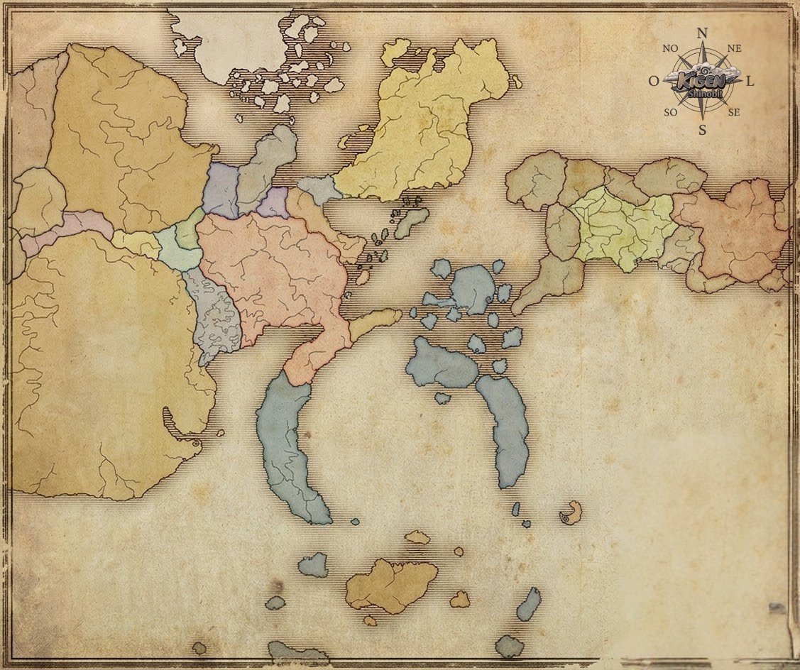

Os países operam como entidades políticas separadas e são, presumivelmente, todas monarquias, governado pelos daimyōs.
GEOGRAFIA

SISTEMA DE LOCOMOÇÃO
▼
Para simular o tamanho real do continente e a dificuldade das viagens, o nosso mapa é dividido em Setores Estratégicos (quadriculados), guiados por um sistema exato de coordenadas:
- Eixo Horizontal: De A até I.
- Eixo Vertical: De 1 até 7.
Cada quadrado percorrido exige um tempo real de viagem (seguindo o horário oficial de Brasília). Você não simplesmente "aparece" em outro país. Para se mover pelo mapa, você precisa documentar sua viagem no seu turno de interpretação (ação de Roleplay).
No final ou início da sua cena, informe sua Posição Atual, a Coordenada de Destino e qual o meio de transporte você está utilizando.
📌 Exemplo prático: "Meu personagem finaliza os preparativos... Estou partindo da coordenada [E3] com destino ao porto na coordenada [H7]. Utilizarei a Rota Terrestre."
| Estilo / Classe | Rota Aérea (Invocações/Planadores) | Rota Terrestre | Rota Marítima |
|---|---|---|---|
| Shinobi | 3 horas | 4 horas | 4 horas |
| Samurai | ❌ Indisponível | 6 horas | 6 horas |
| Civil | ❌ Indisponível | 10 horas | 10 horas |
| Daimyo | ❌ Indisponível | 14 horas | 14 horas |
ANEXAÇÃO TERRITORIAL
▼
O mapa oficial é apenas o cenário inicial. Daimyōs e outros líderes podem realizar campanhas de expansão para engolir novas regiões e reescrever as divisas do mundo.
- As áreas neutras (sem cor) não estão vazias. Elas fervem com cidades independentes e esconderijos de mercenários.
- Sem um governante supremo, essas zonas neutras são o alvo número um dos líderes. Conquistar essas terras significa novos impostos e recursos.
O domínio de um setor é um processo de consolidation de poder.
I - NÍVEIS DE CONQUISTA
Nível 1 (Infiltração): Estágio inicial. Requisitos: 1 Missão Rank B e 2 Missões Rank C.
Nível 2 (Ocupação): Estabelecimento de Posto Avançado. Requisitos: 2 Missões Rank B e 1 Missão Rank A. A anexação dura 7 dias para prosseguir.
Nível 3 (Domínio Total): Estágio final. Exige Missão de Administração ou 14 dias. O setor é totalmente colorido no mapa.
II - MOBILIZAÇÃO DE FORÇAS
- Capangas: Baratos e rápidos (Nível 1). Baixa lealdade.
- Samurais: Especialistas em defesa (Nível 2). Lealdade inabalável.
- Ninjas de Vila: Mobilizados via missões oficiais para a Vila Oculta aliada.
III - LIDERANÇA E TROPAS
Um Líder com pelo menos 2 players garante bônus de resistência. Em caso de invasão inimiga, o progresso de níveis é congelado até a resolução do conflito.
IV - ECONOMIA
Cada setor em Nível 3 gera uma quantia fixa de Ryōs.
ZONAS DE RP - PAÍSES
▼
O mundo recompensa quem se arrisca. Saia da zona de conforto e vá extrair o máximo do mapa!
SANTUÁRIO NAKANO (SUBTERRÂNEO)
Esconderijo sob um templo abandonado. Os Uchihas se reúnem aqui para ler a pedra ancestral e planejar guerras.
Acesso: Clã Uchiha (Intrusos correm risco de morte)
Premiação:
ACAMPAMENTO MÓVEL SENJU
Uma base fortificada erguida temporariamente através do Mokuton, movendo-se pelas florestas para evitar emboscadas.
Acesso: Clã Senju e Aliados
Premiação:
RIO NAKA
Um rio turbulento que marca a linha de tensão entre os Clãs. Onde corpos de batalhas desaguam.
Acesso: Todos, Zona de Risco
Premiação:
BOSQUE DOS NARA
Mata densa protegida por sombras que se movem sozinhas e cervos que patrulham. Rico em ervas medicinais essenciais para guerra.
Acesso: Clã Nara e aliados
Premiação:
DESERTO DOS DEMÔNIOS
Uma vastidão de areia intransponível onde tempestades ocultam segredos esquecidos pelas eras.
Acesso: Exploradores
Premiação:
ZONAS DE RP - LOCAIS (VILAS)
▼
🍃 KONOHAGAKURE (VILA DA FOLHA)
ICHIRAKU RAMEN
O balcão mais famoso da vila, onde o aroma do caldo atrai desde gennins famintos até líderes exaustos. É o ponto de encontro universal.
Acesso: Livre
Premiação:
CHURRASCARIA YAKINIKU Q
Onde os clãs se reúnem para banquetes de carne após o sucesso em grandes missões. Ideais para cenas de vitória.
Acesso: Livre
Premiação:
MIRANTE DO MONUMENTO DOS HOKAGES
O topo das esculturas que vigiam a vila. Um local de silêncio e visão panorâmica, perfeito para cenas de reflexão ou decisões importantes.
Acesso: Jounins ou com Permissão
Premiação:
CEMITÉRIO DE KONOHA
Um campo de pedras memoriais sob árvores antigas. É o cenário para cenas de luto, onde juramentos e vinganças nascem.
Acesso: Livre
Premiação:
ESTUFA DE SUNAGAKURE
Único oásis de verde dentro da vila, onde são cultivadas ervas raras para a divisão de venenos e curas.
Acesso: Ninjas Médicos de Suna
Premiação: